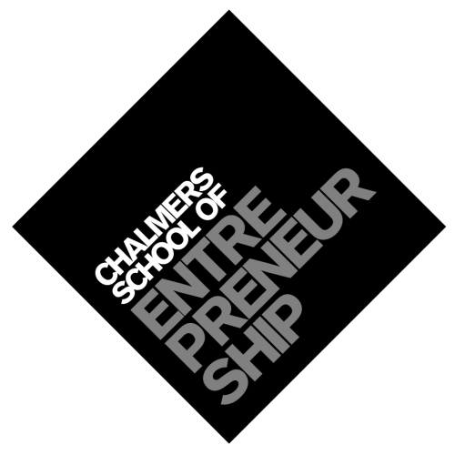

B.Sc. Software Engineering
Between 2011 and 2014 I finished my bachelor at Chalmers University of Technology. This programme mainly focused on Java development through many different group projects. This ment that we developed both programming skills, project management skills and how to perform an agile software development project.
During this time I was also involved in the Student Union in different way. Between 2013 and 2014 I was Chairman of the Software Engineering Student Division.

M.Sc. Entrepreneurship & Business Design
After my studies at Software Engineering, I took the decision to pick master within business development. This master programme is also know as Chalmers School of Entrepreneurship and focus on teaching the different aspects of entrepreneurship. During the second year you run your own startup in Chalmers Ventures incubator, which also is our master thesis project.
This was the place where Vnu were founded. I graduated in 2016.